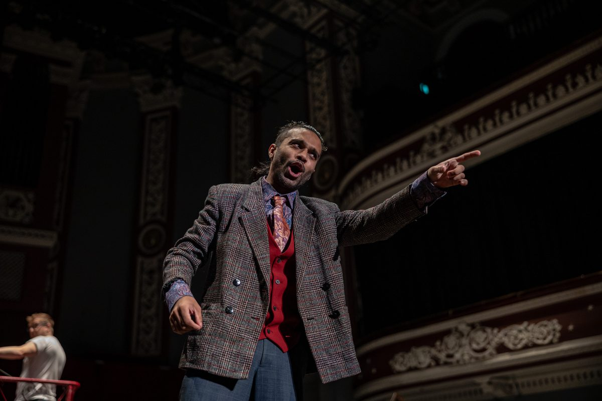
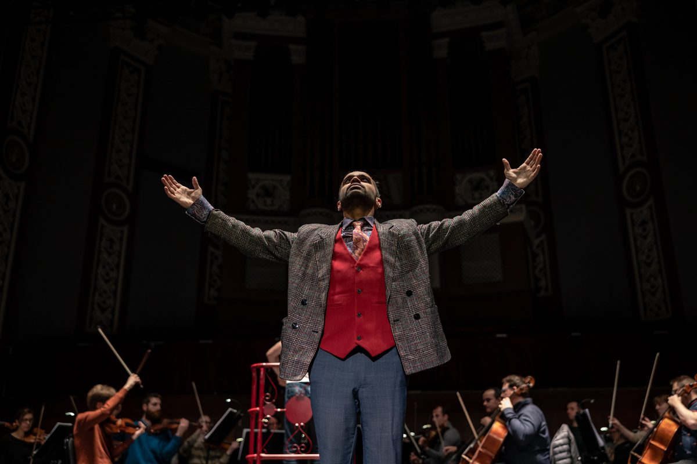

Touring changes the job in ways that don't show up in the programme notes. A new venue every few weeks means a new acoustic, a new stage rake, a new dressing room to warm up in, and often very little time to adjust before curtain. What stays constant is the technique — which is exactly why it has to be built properly in the first place, rather than relearned from scratch in every room.
Why small can hit harder than big
There's a persistent assumption that a large opera house is automatically the more powerful experience, simply because of scale. I've found the opposite is often true. A stripped-down production in a small, intimate space can bring the audience close enough that the classic, larger-than-life characters of opera start to feel genuinely human rather than mythic — you can see an eyebrow move, and the emotional stakes land differently because there's no distance for them to travel across. That's the territory Barefoot Opera works in deliberately, and it's shaped a lot of how I think about performance.

Over a decade with Barefoot Opera
My relationship with Barefoot Opera goes back to when I was still a student — they gave me my first role with them, Dancairo in Carmen, while I was still an undergraduate at the Royal College of Music. I've returned regularly since, through Belcore in L'Elisir d'Amore, Marcello in La Bohème, Figaro in The Barber of Seville, and more recently Guglielmo in Così fan tutte for this year's Grimeborn season at the Arcola Theatre. Barefoot Opera's whole project is rethinking how the classical voice gets trained and how opera actually gets staged — less about spectacle, more about finding new approaches to performance that keep the human being at the centre of it.
Opera as outreach, not just performance
Some of the most meaningful work I've done with Barefoot Opera hasn't been in a theatre at all. RED!, a children's opera built around the story of Little Red Riding Hood, brought together professional singers with dozens of eight- and nine-year-olds from local primary schools, first just before the pandemic and again a couple of years later on a much larger scale, drawing children from several schools in Hastings for an outdoor performance. For a lot of those kids, it was their first real contact with live theatre of any kind — which is really the point of touring work like this: opera has to go to where people actually are, not wait for them to come find it.

What touring actually asks of the voice
Practically, touring is where technique either holds up or doesn't. Different acoustics change how much you can trust the room to carry sound versus how much work the voice has to do itself. Jet lag and unfamiliar beds change how the body sits before a warm-up. This is exactly where the quieter, more portable side of vocal training earns its keep — silent tongue-root and support exercises that can run in an airport queue matter just as much on tour as anything rehearsed on a proper stage, and it's a big part of why I've leaned so heavily into the Metodo 3 Punti approach I've written about separately on this blog.
The thread running through all of it — big house or small room, home stage or a fortnight in a different city every night — is the same one: the voice has to be reliable enough that the room stops being a variable, so the story can actually get told.